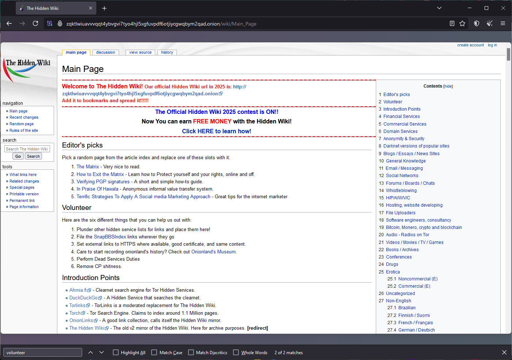

About Hidden Wiki
Link requires Tor Browser!
Link requires Tor Browser

The Hidden Wiki is a directory of websites that exist on the dark web, typically accessible via the Tor network (a privacy-focused browser that allows anonymous access to `.onion` sites). The Hidden Wiki acts like a "starting point" for users who are exploring the dark web, as it lists and categorizes a variety of `.onion` links.
These links often include:
- Forums and chat rooms
- Whistleblower platforms (e.g., SecureDrop)
- Marketplaces (some legal, some not)
- Privacy-focused services
- Hacking or security resources
- Cryptocurrency tools
Important Caveats:
- Not all content is legal or safe: The Hidden Wiki may link to sites involving illegal activities (e.g., drug markets, counterfeit goods, exploitative content). Extreme caution is advised.
- Anonymity ≠ safety: While Tor offers privacy, it doesn't make you invulnerable. Many dark web scams, malware, and honeypots exist.
- There are multiple versions: Some versions of the Hidden Wiki are legitimate, while others are altered or malicious.
If you're exploring for research or curiosity, it's best to:
- Use a secure, up-to-date Tor browser
- Avoid clicking on suspicious or unverified links
- Never download files or provide personal information
Steps:
- Get Tor Browser Link here opens in new tab.
- Visit Hidden Wiki Link for Hidden Wiki opens in new tab